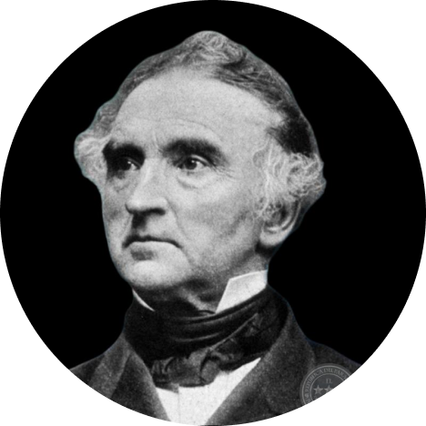
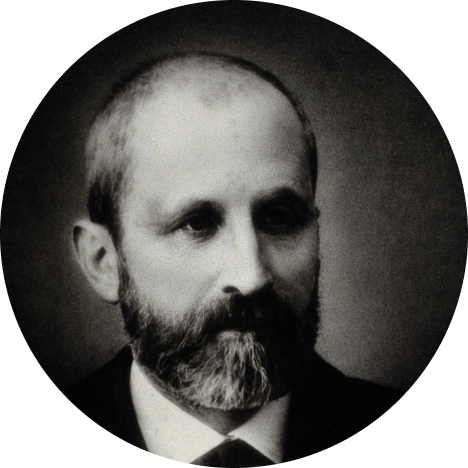
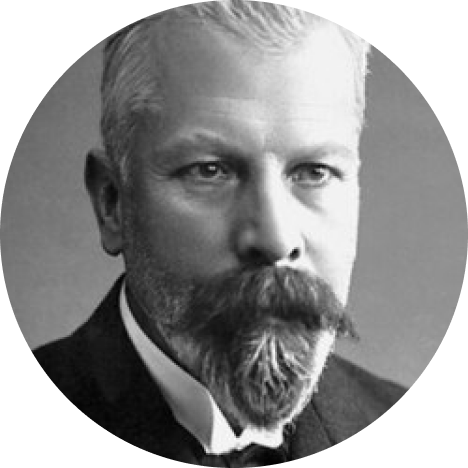
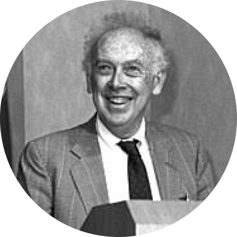
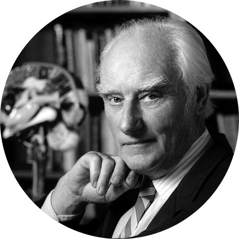
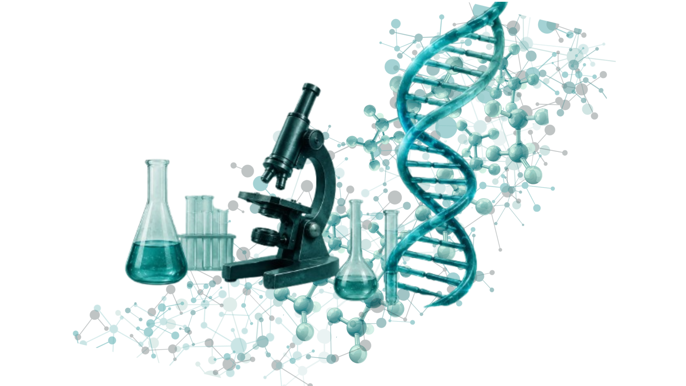

Justus von Liebig
1803 – 1873
Considerado um dos pais da bioquímica moderna. Aplicou métodos químicos para estudar os processos vitais.
BIOQUÍMICA
A química da vida

História da Bioquímica
A Bioquímica surgiu da união entre a Biologia e a Química, revelando os processos moleculares que sustentam a vida.
EXPLORAR CONTEÚDO1813
Justus von Liebig aplica os conceitos da química para entender processos biológicos.
1869
Friedrich Miescher isola o DNA do núcleo das células pela primeira vez.
1897
Eduard Buchner demonstra que reações químicas podem ocorrer fora das células, graças às enzimas.
1944
Avery, MacLeod e McCarty demonstram que o DNA é o material genético.
1953
Watson e Crick desvendam a estrutura do DNA em forma de dupla hélice.

1803 – 1873
Considerado um dos pais da bioquímica moderna. Aplicou métodos químicos para estudar os processos vitais.

1844 – 1895
Descobriu a “nucleína”, que mais tarde foi identificada como DNA, abrindo caminho para a genética.

1860 – 1917
Pioneiro no estudo das enzimas. Provou que fermentações podem ocorrer fora das células vivas.

Nascido em 1928
Cientista americano que, junto com Crick, propôs a estrutura da dupla hélice do DNA.

1916 – 2004
Físico e biólogo molecular que colaborou na descoberta da estrutura do DNA e em diversos avanços da biologia molecular.
A Bioquímica nasceu da necessidade de entender os processos químicos que acontecem nos seres vivos. No século XIX, os cientistas começaram a aplicar técnicas da química para investigar a fermentação, a respiração e a composição dos tecidos.
Com o tempo, novas tecnologias e descobertas permitiram aprofundar esse conhecimento, revelando moléculas essenciais e mecanismos que sustentam a vida em nível molecular.
Hoje, a Bioquímica está presente em diversas áreas, como medicina, biotecnologia, nutrição, farmacologia e tantas outras, impactando diretamente a qualidade de vida das pessoas.
